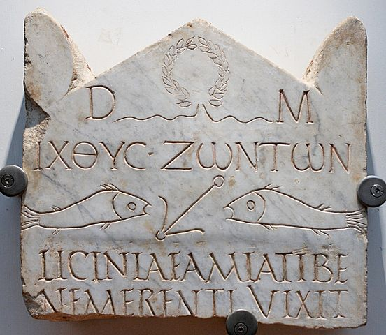
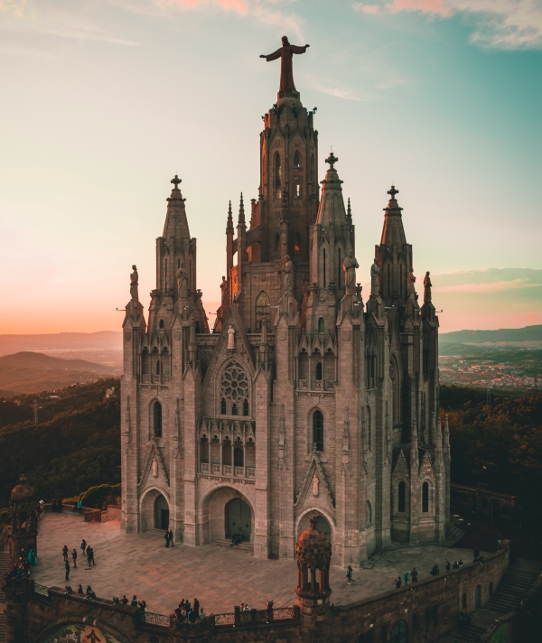

Culture | Christianity
The Christian Art Tradition
An introduction to the Christian art tradition, with a focus on architecture, music and paintings.
Introduction
Let this article introduce you to the Christian art tradition and shortly touch on the three main forms of artistic expression: music, painting and architecture.
Origin of the art tradition
In early times, Judaism was known as a religion of the scrolls and Christianity a religion of the book. That is, the sacred texts were written down in different mediums for each of these Abrahamic faiths. But this seemingly simple difference relates to their diverging artistic expression: it is easier to make depictions and icons in books than it is on scrolls. And that is exactly what Christians did: they made many artistic expressions of their faith.
An example is this ichtus symbol, and it symbolizes jesus christ An ichtus symbol made in the third century Common Era (After Christ).
So, the Christian art tradition has a deep-rooted history. It adds to the scripture, and is - for some, if not many - a form of practicing their belief. Indeed, catholic iconography and some classical music pieces have a very animated meaning to Christians; they have a piece of
God or the holy spirit in them. Many Christian believe that God speaks through these forms of art.
So, let us delve into the three main forms of Christian art.
Paintings
I have spoken to priests myself, and many have pointed me to the use of music in their sermons. One beautifully said
“music can convey the faith much better than my preaches ever could”.
Another illustrated how music has an elevated meaning for him, and many Christians alike: the holy trinity (Jesus, God and the Holy Ghost are one but also separate at the same time) is impossible to explain rationally, but when you play a C-chord (the notes c, e and g) it all comes together and it makes more sense than words ever could.Music
As said, the tradition of Christian paintings started at an early age and there is immeasurably much to say about this aspect of the religion. To pick a simple topic, I could name the difficulty of representing Jesus, who is both a human and God at the very same time. The dichotomy stirs deep philosophical contemplations, but also challenges artists to visually portray such a complex being. The christian art curator of The National Gallery in London, explains it clearly in this video.
Architecture
At the start of Christianity, the church simply meant ‘a collection of christians’; in no way did it designate a building of sorts. Yet, that has come to change over the ages. Catholic churches are very flamboyant, and designate an area where Christians can feel at home. For some Christians, a church is more than that; they say they may feel ‘a good spirit’ in the air when they visit certain churches and think that a visit nurtures their soul.
That is the reason why people support the existence of church buildings: they think it is a place where god dwells. Besides that, it is a place of calmth and it separates the society from the religious realm. You can find all these contemplations back in many church designs. For instance, most churches are high and have huge gates with stairs leading up to them: it indicates their separation from the worldly society.
If you talk about Christian architecture you cannot neglect the influence of freemasons. Indeed, if you look well you will see an abundance of meaning or hidden messages in churches. Particular symbols such as bee hives, cornerstones and floral decorations were placed for a thoughtful reason. They are by no means random, and you may see similar symbols recur in many different churches. A very common front view of the church is as such: 
The three gates is a quite common element in old (and mostly catholic) churches.
Isn’t it odd, that the church’s front has three gates? It recurs in so many churches because builders sought to manifest the hierarchy in the freemason’s lodges; of master, student and apprentice.
Conclusion
There have been entire book volumes, dissertations and documentaries written about the Christian art tradition. There are many areas that you could focus in on, and you could dedicate a lifetime of research on the religious element in Bach’s music. Yet, this article is a simple and brief explanation of the Christian art tradition so that you can improve your general understanding - and choose your own scope from here.